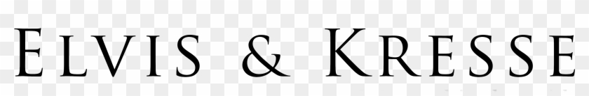

product yang dijual oleh kami sudah melewati tahapan yang ketat dari beberapa perusahaan kami sehingga
produk yang kami jual sudah teruji ramah terhadap lingkungan.
Dengan dukungan pabrik-pabrik mitra kami, kami percaya dapat mewujudkan visi bersama untuk menciptakan dunia yang lebih hijau.

Dengan memilih EcoShopper, Anda turut berkontribusi dalam menciptakan dunia yang lebih hijau dan sehat. Setiap produk kami tidak hanya dirancang untuk mempermudah hidup Anda tetapi juga mendukung keberlanjutan lingkungan.